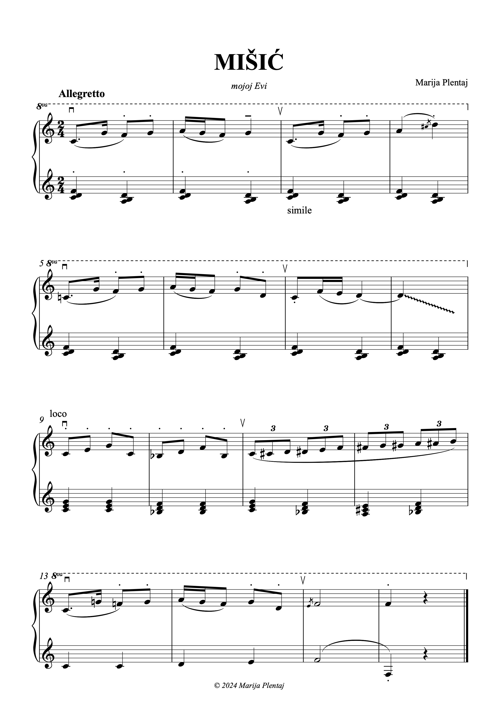
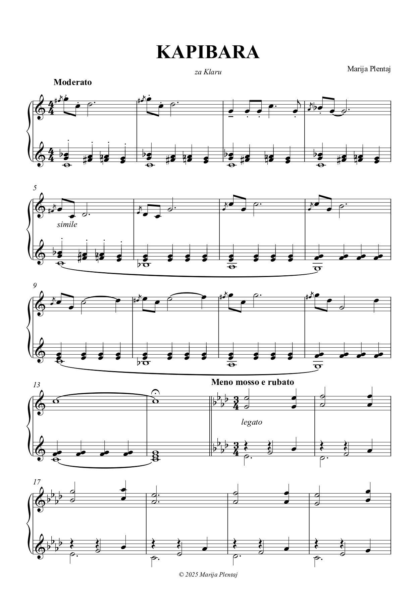
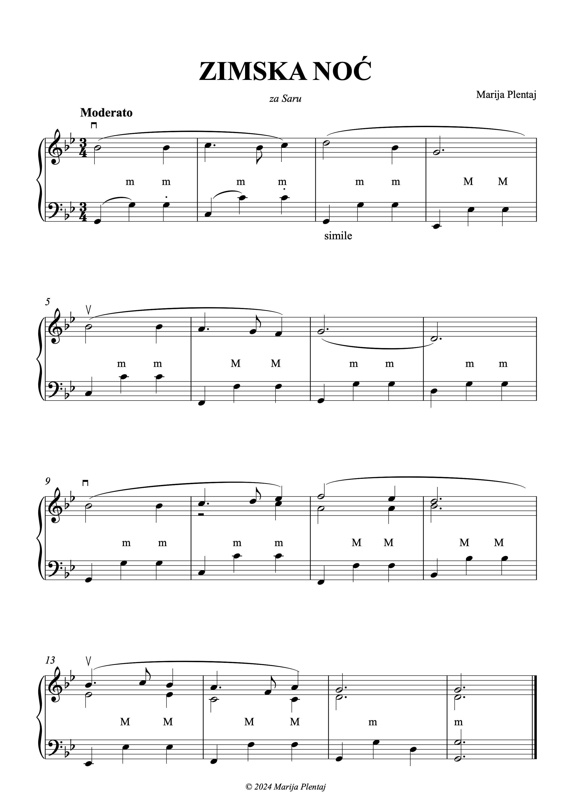
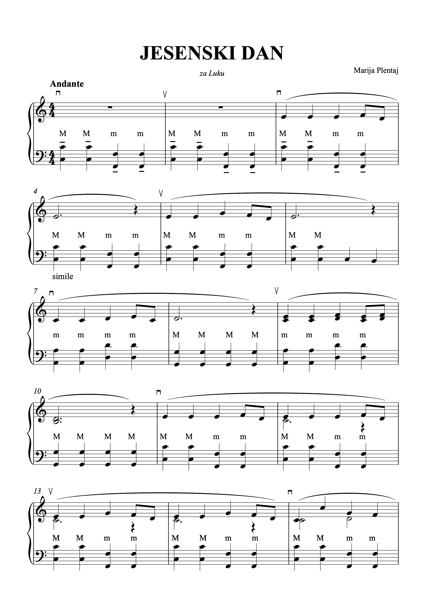
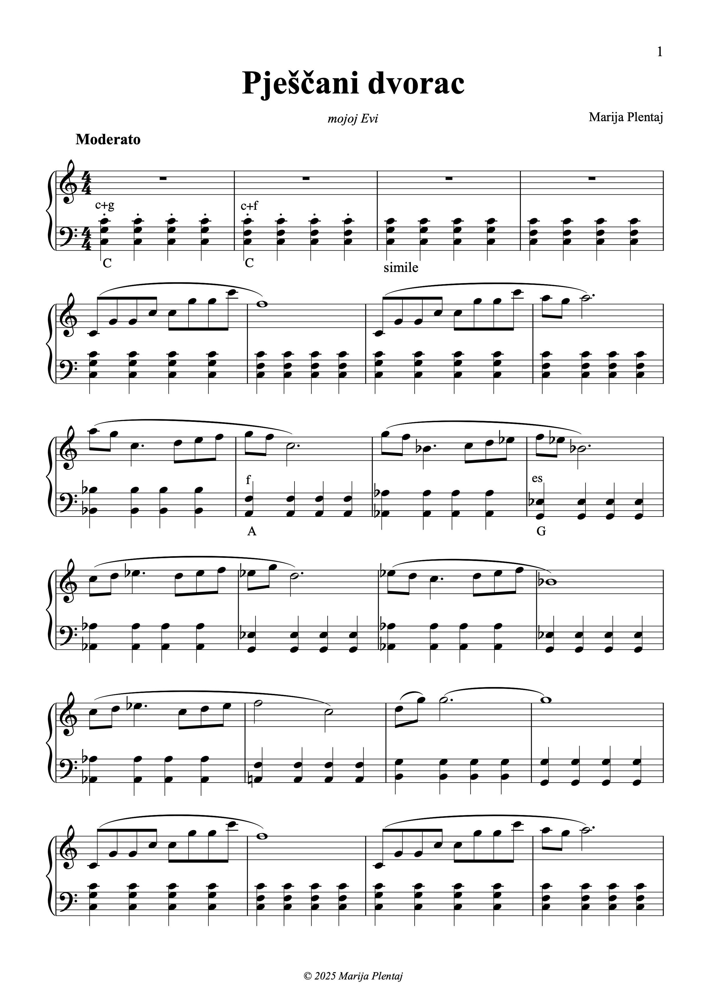
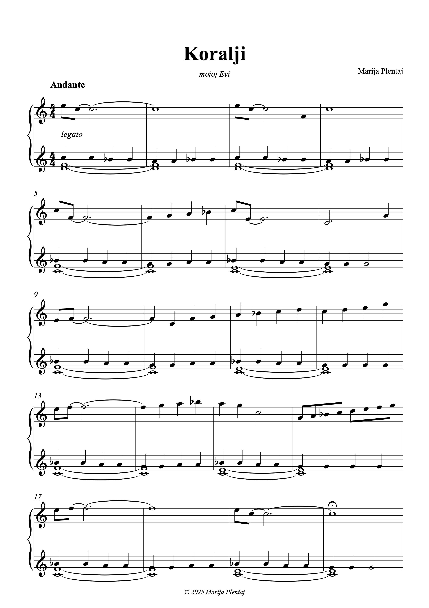

ACCORDIONIST · TEACHER · ARRANGER
Marija Plentaj
Croatian accordionist and teacher with more than two decades of professional experience. Creating original music, arrangements and teaching materials for accordion. Selected sheet music and teaching materials are available here as free downloads.


SHEET MUSIC
Accordion Scores
Original Compositions

KAPIBARA



Arrangements
Cigani ljubljat pesnji
Russian-Romani traditional song · arr. Marija Plentaj · solo
For Klara
Vranac
Dražen Pavin · arr. Marija Plentaj · solo
For Luka
The Muppet Show Theme
Jim Henson & Sam Pottle · arr. Marija Plentaj · solo
For Klara
Ponoć
Željko Joksimović / Predrag Živković Tozovac · arr. Marija Plentaj · sextet
From the film Toma
For "3 mame & 3 kćeri"
Carol of the Bells
Mykola Leontovych · arr. Robert Prizeman / Epique · adapted by Marija Plentaj · septet
From the film Home Alone
Married Life
Michael Giacchino · arr. Brendan Hayes · adapted by Marija Plentaj · sextet
From the animated film Up
For "3 mame & 3 kćeri"
Mesečina
Šaban Bajramović / Goran Bregović · arr. Le Benevolence · adapted by Marija Plentaj · sextet
From the film Underground
For "3 mame & 3 kćeri"
White Christmas
Irving Berlin · adapted by Marija Plentaj · quintet
From the film Holiday Inn
Kada padne prvi sneg
Zvonko Bogdan · based on Richard Stein: Sanie cu zurgălăi · arr. Marija Plentaj · solo
For Luka
Running Up That Hill
Kate Bush · arr. Vicky Williams · adapted by Marija Plentaj
Featured in the series Stranger Things
For "3 mame & 3 kćeri"
Teaching Materials
.jpg)
.jpg)
.jpg)
.jpg)
.jpg)
.jpg)
.jpg)
.jpg)
About

Marija Plentaj
Marija Plentaj is a Croatian accordionist and accordion teacher with more than two decades of professional experience. She completed two secondary music programs at the Vatroslav Lisinski Music School in Bjelovar — accordion, studying with Marjan Krajna, and music theory, studying with Alida Jakopanec. She then studied accordion at the University of Music and Performing Arts in Graz, Austria, with Geir Draugsvoll and later graduated from the Music Academy in Pula, where she studied with Denis Modrušan and Franko Božac. She later enrolled in a master’s degree program in accordion at the University of Music and Performing Arts Graz, studying with Janne Rättyä.
During her education, she took part in numerous national and international competitions. One of her most notable achievements was winning first prize and achieving the highest score across all accordion categories at the 36th Croatian National Competition of Music and Dance Students in Rijeka in 1998. As a member of accordion orchestras, she performed at UNESCO headquarters in Paris, France, won first prize at the Premio Internazionale della Fisarmonica in Castelfidardo, Italy, and participated in the European Festival of Musical Youth in Barcelona, Spain.
She has taught at several music institutions and has worked since 2014 at the Vatroslav Lisinski Music School in Bjelovar, where she is a Professor Advisor and Head of the Piano Department. During more than two decades of teaching, her students have won more than 130 awards and medals at national and international solo and chamber music competitions. Her teaching is centered on an individual approach, with particular attention to contemporary and less familiar repertoire, as well as film music and selected popular repertoire, adapting music and teaching materials to each student’s abilities, interests and stage of development.
Alongside teaching, she is actively involved in the development and promotion of accordion education in Croatia. She is a co-founder of the Accordion Center Association and has initiated and co-organized numerous competitions, seminars, educational projects and publications, including the Croatian Accordion Competition in Daruvar, the Croatian Accordion Teachers Seminar Series, the Daruvar Accordion Award and Eho, Croatia’s specialized digital accordion magazine. She also has a long-standing interest in web and graphic design and has created and maintained websites, visual identities, logos, publications and other digital and promotional materials for music and educational projects.
She works as a jury member at national and international music competitions and regularly gives seminars, lectures and presentations at professional development events for music teachers. Her work also includes creating original compositions, arrangements and teaching materials for accordion. She especially enjoys composing and arranging music for accordion, often creating pieces and adaptations inspired by her students, their interests and the possibilities of the instrument.